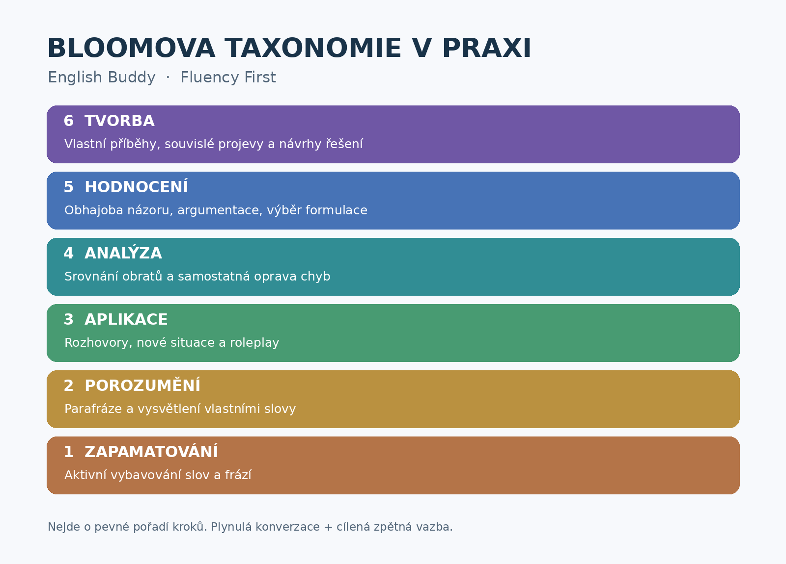

Vyber misi
Otevři kartu a přečti si jednoduchý komunikační cíl.
LEARN TO SPEAK, NOT JUST TO STUDY
Šest malých jazykových misí. Vybereš si výzvu, otevřeš vlastní ChatGPT a začneš mluvit. Bez instalace, bez API klíče pro tento web — jen tvoje angličtina a chuť ji zkusit.
Experimentální projekt • Pravidla mohou v různých AI modelech fungovat odlišně • Účinnost zatím není ověřena
CHOOSE YOUR PATH
Žádné body ani žebříčky. Jen konkrétní důvod začít mluvit.
THREE EASY STEPS
Otevři kartu a přečti si jednoduchý komunikační cíl.
Nejdříve klikni na „1. Zkopírovat celý prompt“. Až uvidíš potvrzení, klikni na „2. Otevřít ChatGPT“. Tam vlož prompt pomocí Ctrl+V a odešli. Když kopírování selže, zobrazí se pole pro ruční výběr.
Ideálně zkus 10–15 minut hlasového rozhovoru. Vyplň krátkou zpětnou vazbu nebo ji zkopíruj.
THE LEARNING PRINCIPLE
Každá mise podporuje konkrétní typ přemýšlení: od vybavování frází přes vysvětlování až po argumentaci a tvorbu. Nejde o povinný sled šesti kroků.
Otevřít schéma ve větší velikosti ↗
HELP SHAPE THE EXPERIMENT
Stačí pár vět. Neodesíláme nic automaticky — odpověď si zkopíruješ, případně otevřeš připravený formulář, pokud je nastavený.